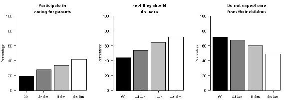

Regarding the pie charts:
Name three things wrong with these figures.
The values in the pie charts don't add up to 100%.
The three figures are not consistent in their assignments of colors/shading to groups.
Pie charts are always awful.
Sketch an improved version of these figures.
I like the following bar charts.

[Click on the figure
for a larger version.]
Here is the R code I used to make them:
datA <- c(19,28,34,42)
datB <- c(44,54,65,72)
datC <- c(72,68,60,49)
par(mfrow=c(1,3),las=1)
barplot(datA, col=c("black","gray50","gray75","white"),
names=c("W","Af Am", "H Am", "As Am"), ylim=c(0,100),
main="Participate in\n\ncaring for parents",
ylab="Percentage")
barplot(datB, col=c("black","gray50","gray75","white"),
names=c("W","Af Am", "H Am", "As Am"), ylim=c(0,100),
main="Feel they should\n\ndo more",
ylab="Percentage")
barplot(datC, col=c("black","gray50","gray75","white"),
names=c("W","Af Am", "H Am", "As Am"), ylim=c(0,100),
main="Do not expect care\n\nfrom their children",
ylab="Percentage")
Note: The \n within the character
string for the argument main (for placing the
title on the plot) indicates the insertion of a line
break. (I inserted two line breaks to give a better space
between the lines in the title.) The argument
las=1 to the function par
causes the numbers on the y-axis to be printed up-and-down
rather than sideways. The rest you can probably figure
out. If you can't, check out the R help files.
mean=10.1; median=10.0; SD=1.1
Add 2 to the mean and median; the SD is unchanged
Multiply the mean, median and SD by 10
Multiply the mean and median by -10; multiple the SD by 10
For the mean and median, add 2 and then multiply by 10 (new mean=121; new median=120). For the SD, just multiply by 10 (new SD=11)
For the mean and median, multiply by 10 and then add 2 (new mean=103; new median=102). For the SD, just multiply by 10 (new SD=11)
Because the distribution has a long right tail, the mean is larger than the median, and so the red and blue segments are the median and mean, respectively.
The SD is about 15. (Think "typical deviation from the average".)
The SD is about 3. (Think "typical deviation from the average".)
| Last modified: Wed Feb 22 09:45:14 EST 2006 |
{kind=link}